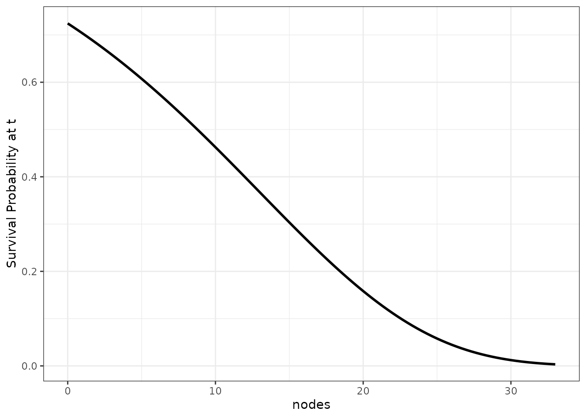
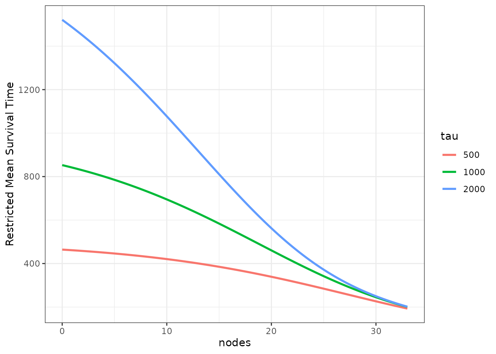

Visualizing the Causal Effect of a Continuous Variable on a Time-To-Event Outcome
Robin Denz
Source:vignettes/introduction.Rmd
introduction.RmdIntroduction
Stratified survival curves are a great way to visualize the effect of
a categorical variable, such as treatment status, on the survival time.
They are easy to produce, easy to understand and (if done correctly)
visually appealing. The situation is slightly more complicated when
confounders exist that need to be accounted for. In this case, methods
that explicitly remove the influence of confounders need to be used to
estimate the curves. Luckily, there are quite a few of those methods and
also associated R-packages that implement them directly, such as the
adjustedCurves package (Denz et al. 2023).
In many cases however, we are not interested in the effect of a categorical variable. Instead we want to show the effect of a continuous variable, for example when studying a new biomarker to predict a certain disease. Currently, there is only a small amount of research on this topic and even less publicly available code. When confounder-adjustment is required, the available code and literature is practically non-existent.
The contsurvplot package tries to fill this gap by
providing multiple types of plots to visualize the causal effect of a
continuous variable on a time-to-event outcome (Denz & Timmesfeld
2023). All plots included rely on a previously fit model that describes
the effect of the target variable on the time-to-event outcome. This
model is then used to perform G-Computation (Robins 1986) to
estimate covariate-level-specific survival curves or cumulative
incidence functions (CIF). By including confounders in the model, all
plots are naturally adjusted for these confounders. In this vignette, we
will showcase the usage of these methods. More details and discussion of
the plots presented here can be found in the paper associated with this
package (Denz & Timmesfeld 2023).
Installation
The stable release version of this package can be installed directly from CRAN using:
install.packages("contsurvplot")Alternatively, the developmental version can be installed from github, using the following code:
devtools::install_github("RobinDenz1/contsurvplot")Example Data and Setup
First we will load all required packages. This seems like a lot, but most of them are only required for one plot each.
library(contsurvplot)
library(ggplot2)
library(dplyr)
library(rlang)
library(riskRegression)
library(survival)
library(pammtools)
library(gganimate)
library(transformr)
library(plotly)
library(reshape2)
library(knitr)
library(rmarkdown)As an example we will utilize the colon dataset included
in the famous survival R-package. It includes data on 1858
patients from a study about treating colon cancer using adjuvant
chemotherapy. We can obtain the colon data by using the
data() function. Below are the first few rows of the
dataset:
data(cancer)
colon$sex <- factor(colon$sex)
head(colon)
#> id study rx sex age obstruct perfor adhere nodes status differ extent
#> 1 1 1 Lev+5FU 1 43 0 0 0 5 1 2 3
#> 2 1 1 Lev+5FU 1 43 0 0 0 5 1 2 3
#> 3 2 1 Lev+5FU 1 63 0 0 0 1 0 2 3
#> 4 2 1 Lev+5FU 1 63 0 0 0 1 0 2 3
#> 5 3 1 Obs 0 71 0 0 1 7 1 2 2
#> 6 3 1 Obs 0 71 0 0 1 7 1 2 2
#> surg node4 time etype
#> 1 0 1 1521 2
#> 2 0 1 968 1
#> 3 0 0 3087 2
#> 4 0 0 3087 1
#> 5 0 1 963 2
#> 6 0 1 542 1For exemplary purposes, suppose that we are only interested in the
causal effect of the number of lymph nodes with detectable cancer
(column nodes). This is a semi-continuous variable only,
because it is only defined for integers. We will however treat it as a
proper continuous variable here, since it makes no difference for the
examples.
First, we need a model describing the time-to-event outcome in order
to make any plots possible. Here, we will simply use a cox-regression
model, including the covariates age, sex and
nodes as independent variables:
It is important that we use x=TRUE in the function call,
otherwise it won’t be possible to create the needed estimates. By
including age and sex, we are adjusting all
graphics below for these variables.
By using the standard summary method of the
coxph model object, we can take a look at the estimated
hazard-ratios:
summary(model)
#> Call:
#> coxph(formula = Surv(time, status) ~ age + sex + nodes, data = colon,
#> x = TRUE)
#>
#> n= 1822, number of events= 897
#> (36 observations deleted due to missingness)
#>
#> coef exp(coef) se(coef) z Pr(>|z|)
#> age 0.0004934 1.0004936 0.0028216 0.175 0.861
#> sex1 -0.0645554 0.9374842 0.0669405 -0.964 0.335
#> nodes 0.0872323 1.0911501 0.0063330 13.774 <2e-16 ***
#> ---
#> Signif. codes: 0 '***' 0.001 '**' 0.01 '*' 0.05 '.' 0.1 ' ' 1
#>
#> exp(coef) exp(-coef) lower .95 upper .95
#> age 1.0005 0.9995 0.9950 1.006
#> sex1 0.9375 1.0667 0.8222 1.069
#> nodes 1.0912 0.9165 1.0777 1.105
#>
#> Concordance= 0.628 (se = 0.009 )
#> Likelihood ratio test= 134.1 on 3 df, p=<2e-16
#> Wald test = 191.9 on 3 df, p=<2e-16
#> Score (logrank) test = 195.4 on 3 df, p=<2e-16We can see that the hazard-ratio of the target variable
nodes is approximately 1.091. Together with a very small
p-value, this indicates that the survival probability of the patients
decreases with a rising number of affected lymph nodes. This is a
plausible (and hardly shocking) result.
But how bad is a hazard-ratio of 1.091 exactly? A trained statistician might have no problem interpreting this number correctly, but for many other medical scientists this number might not mean that much. Appropriate visualizations are the key to proper communication of such regression results. Because relative effect measures, such as the hazard-ratio, are inherently harder to interpret than absolute effect measures, we will only use the latter. This includes the standard survival probability at time .
How do We get the Survival Probability from the Model?
Internally, all plot functions call the curve_cont
function to perform g-computation in order to obtain survival
probability estimates at
that would have been observed if all patients had a specific value of
the continuous covariate. Internally, it uses the
predictRisk function from the riskRegression
package to do this (Ozenne et al. 2017). For example, lets look at this
specific function call:
curve_cont(data=colon, variable="nodes", model=model,
horizon=c(0, 10, 15), times=c(1000, 2000))
#> time est cont
#> 1 1000 0.7244607 0
#> 2 2000 0.6290340 0
#> 3 1000 0.4625632 10
#> 4 2000 0.3299905 10
#> 5 1000 0.3035407 15
#> 6 2000 0.1800854 15Using the previously fit cox-regression model, this function outputs a single row for each covariate - time combination with an associated survival time. The first column shows the average survival probability of all patients at , if they all had lymph nodes with detectable cancer. In this case, the probability is approximately 0.724. Similarly, if all patients would have had 10 affected lymph nodes, the average survival probability would be much lower at approximately 0.462.
By estimating these probabilities for a wide range of times and values of the continuous variable, we effectively get a three dimensional counterfactual survival curve. If the model is correctly specified, the estimates will be unbiased with an easy causal interpretation. All that’s left is to visualize them appropriately.
Plots Based on Summary Statistics
There are some plots based on summary statistics of survival curves as they evolve with the continuous variable. The main idea here is to reduce the visualization to two dimensions by summarizing the survival curves at specific values of the variable in one value. This statistic can then be plotted as a single line.
Survival Probability at t
The simplest of all is to plot the survival probability at a specific
point in time as a function of the continuous variable. This can be done
in the contsurvplot package using the
plot_surv_at_t function. For example, the following graph
can be produced using
plot_surv_at_t(time="time",
status="status",
variable="nodes",
data=colon,
model=model,
t=1000)
We can make this graph a little more interesting by plotting the survival probability at multiple points in time at once:
plot_surv_at_t(time="time",
status="status",
variable="nodes",
data=colon,
model=model,
t=c(100, 500, 1000, 1500, 2000))Although this function is easy to produce and to understand, it lacks information about the survival probability at all other times not shown. It is best to use this method only when there are specific (possibly pre-specified) times of interest.
Survival Time Quantiles
The same kind of graphic can be produced for survival time quantiles
using the plot_surv_quantiles function. The following plot
shows the effect of the nodes on the most popular survival
time quantile - the median survival time:
plot_surv_quantiles(time="time",
status="status",
variable="nodes",
data=colon,
model=model,
p=0.5)We can also use this function to plot multiple survival time quantiles at once:
plot_surv_quantiles(time="time",
status="status",
variable="nodes",
data=colon,
model=model,
p=c(0.1, 0.25, 0.5, 0.75, 0.9))While a little more sophisticated, this type of plot shares the same problem of the plot before it. It is still only one point of the respective survival curves visualized over the range of the target variable.
Restricted Mean Survival Time
A different kind of statistic is the restricted mean survival time (RMST). It is defined as the area under the survival curve up to a specific point and can be interpreted as the mean survival time of the cohort in the interval . By taking the whole integral, this statistic technically takes the whole survival curve in the specific interval into account. However, it is still dependent on .
A graph similar to the ones above, but using the RSMT, can be
produced using the plot_surv_rmst function:
plot_surv_rmst(time="time",
status="status",
variable="nodes",
data=colon,
model=model,
tau=1000)To show how the estimates change with different values of , we can also supply multiple values yet again to produce multiple curves:
plot_surv_rmst(time="time",
status="status",
variable="nodes",
data=colon,
model=model,
tau=c(500, 1000, 2000))
Restricted Mean Time Lost
The restricted mean time lost (RMTL) is very closely related to the RMST. Instead of integrating the area under the survival curve, the area under the cumulative incidence function (CIF) is calculated. This can be useful when there are multiple mutually exclusive event types, in which case only the cause-specific CIF can be estimated, but not the cause-specific survival curve.
The plot_surv_rmtl function can be used for this
purpose. It has the same functionality and syntax as the
plot_surv_rmst function, so we will only show one plot with
multiple
values below:
plot_surv_rmtl(time="time",
status="status",
variable="nodes",
data=colon,
model=model,
tau=c(500, 1000, 2000))Since this is a simple survival case with only one event type, the equation still holds, which is why the curves are simply inverted.
Plots Showing the Entire Survival Area
In many cases it makes more sense to plot the entire 3D survival curve dependent on the continuous variable. There are a few options to do this. Each of them has different pros and cons, none is a solve-it-all magic bullet. The choice of plot is highly dependent on the data at hand.
Single Curves
The simplest way to plot the entire survival curve is picking a few
specific values of the variable (in our case a few specific numbers of
affected lymph nodes) and plotting the causal survival curve for each
one. This can be done using the plot_surv_lines function.
Here, we pick a few equally spaced values:
plot_surv_lines(time="time",
status="status",
variable="nodes",
data=colon,
model=model,
horizon=c(0, 5, 10, 15, 20, 25, 30))Survival Area
The single survival curves do however tend to obscure the fact that
there is a continuous transition between the covariate values. One way
to make this a little more explicit is to use the
plot_surv_area function, which is similar, but plots the
area between those single curves as well.
Using the default values, it gives us a continuously colored area for the whole range of possible lymph node values:
plot_surv_area(time="time",
status="status",
variable="nodes",
data=colon,
model=model)It achieves this by calculating a big amount of variable
(nodes) specific survival curves and filling the area
between them continuously.
We can take a step back and divide the area in discrete bins, coloring them similarly:
plot_surv_area(time="time",
status="status",
variable="nodes",
data=colon,
model=model,
discrete=TRUE)Of course we can change the colors as well. Either by providing
start_color and end_color values for a graded
scale as used above, or by supplying a vector of specific colors using
the custom_color argument. We will show only the first
option here, using a black and white scale with a little fewer bins:
plot_surv_area(time="time",
status="status",
variable="nodes",
data=colon,
model=model,
discrete=TRUE,
bins=5,
start_color="lightgrey",
end_color="black")By keeping the x-axis and y-axis as well as the shape of a normal survival curve, we think that this type of plot is very appropriate in many situations. It does, however, only work if the effect of the continuous covariate is linear or at least always monotonically increasing or decreasing. For example, using the Body-Mass-Index would not work with this type of plot, as the BMI usually has a curved relationship on survival.
Survival Heatmap
One way around this is to use a heatmap instead, which can be created
using the plot_surv_heatmap function:
plot_surv_heatmap(time="time",
status="status",
variable="nodes",
data=colon,
model=model,
start_color="blue",
end_color="red")In this plot the survival time is still on the x-axis, but the continuous variable (here the lymph nodes) is on the y-axis and the survival probability at each point is shown using a continuous color scale. This works well if the variable has a big effect on the survival, as is the case here. It does however tend to obscure small causal effects.
As a visual help, we can add some equally spaced contour lines to it
using the contour_lines argument:
plot_surv_heatmap(time="time",
status="status",
variable="nodes",
data=colon,
model=model,
contour_lines=TRUE,
start_color="blue",
end_color="red")Survival Contours
We can of course go a step further than the
plot_surv_heatmap and plot an entire contour plot using the
plot_surv_contour function:
plot_surv_contour(time="time",
status="status",
variable="nodes",
data=colon,
model=model)We can also change the number of bins here:
plot_surv_contour(time="time",
status="status",
variable="nodes",
data=colon,
model=model,
bins=5)This type of plot is preferable to the heatmap in most cases. In case of a very smooth effect, the simple heatmap might be a better choice though.
Survival Matrix
A different version of a heatmap can be created using the
plot_surv_matrix function. Instead of using a smooth area
with color scaling, this type of plot divides the are into rectangles
and displays the average survival probability inside those. It can be
created like this:
plot_surv_matrix(time="time",
status="status",
variable="nodes",
data=colon,
model=model)This type of heatmap is definitely easier to interpret (and arguably more pretty), but it also swallows up information by only displaying average survival probabilities in each rectangle. It is important to check whether the underlying smooth effect is correctly displayed with the current amount of rectangles and to change the dimensions of the matrix accordingly.
In this case, using a 10 x 10 matrix seems fine. This is what it would look like to use only a 5 x 5 matrix:
plot_surv_matrix(time="time",
status="status",
variable="nodes",
data=colon,
model=model,
n_col=5,
n_row=5)25 rectangles are clearly not enough in this case.
Survival 3D Surface
Although frowned upon by many scientists, it almost feels natural to
use a 3D surface plot here. All plots above are attempts at showing a
three-dimensional surface in a two-dimensional plot using color scales.
Why not actually show the three-dimensional surface directly? We can do
this using the plot_surv_3Dsurface function:
plot_surv_3Dsurface(time="time",
status="status",
variable="nodes",
data=colon,
model=model)In this particular case, the plot is not too bad. But the usual criticism of 3D plots still holds here. Identifying single points in this 3D plane is almost impossible. Without being able to rotate this figure interactively, this seems like a sub-optimal visualization choice compared to the other plots above.
Plots for Digital Use Only
If we are not forced to put the plot on paper, however, there is no
reason not to use the interactive nature of computers. There are two
implemented methods for interactive survival plots in this package, both
based on the plotly package. Another plot method based on a
simple animation is also implemented.
Interactive 3D Surface Plots
By setting the interactive argument to TRUE
in the plot_surv_3Dsurface plot, we can overcome some
difficulties of the 3D plot shown above:
# NOT RUN, to keep the vignette size reasonable
plot_surv_3Dsurface(time="time",
status="status",
variable="nodes",
data=colon,
model=model,
interactive=TRUE)Using a Slider
A different way to create an interactive plot is using a slider. On
the first look, this plot looks like a standard survival curve. Until
you notice the slider. It can be used to specify different values of the
continuous variable dynamically. This type of plot can be created using
the plot_surv_animated function, setting the
slider argument to TRUE. For visual clarity,
we also set the horizon argument to some reasonable values
here:
# NOT RUN, to keep the vignette size reasonable
plot_surv_animated(time="time",
status="status",
variable="nodes",
data=colon,
model=model,
slider=TRUE,
horizon=seq(0, 30, 1))Using Animation
If we don’t want the user to have to do anything, we can also create
the same plot, but making it animated by default. It will cycle through
the covariate values in horizon one at a time at an equal
speed forever, showing what happens to the survival curve.
This type of plot can be created using the
plot_surv_animated function again, but setting
slider=FALSE this time:
# NOT RUN, to keep the vignette size reasonable
plot_surv_animated(time="time",
status="status",
variable="nodes",
data=colon,
model=model,
slider=FALSE,
horizon=seq(0, 30, 1))Facetting by Groups
In some scenarios it might be useful to display the average treatment
effect separately for some subgroups. Most plot functions in this
package support this directly using the group argument. The
grouping variable should be a factor variable that is included as
independent variable in the used model. For example, we
used sex as an independent factor variable here. To obtain
survival contour plots conditional on the sex of the
patients, we can use the following code:
plot_surv_contour(time="time",
status="status",
variable="nodes",
group="sex",
data=colon,
model=model)This also works for survival area plots in exactly the same way:
plot_surv_area(time="time",
status="status",
variable="nodes",
group="sex",
data=colon,
model=model)In this case, the differences are not extremely big because
sex does not have a big effect on the survival time.
Literature
Robin Denz, Nina Timmesfeld (2023). “Visualizing the (Causal) Effect of a Continuous Variable on a Time-To-Event Outcome”. In: Epidemiology 34.5
Robin Denz, Renate Klaaßen-Mielke, and Nina Timmesfeld. A Comparison of Different Methods to Adjust Survival Curves for Confounders. Statistics in Medicine (2023) 42:10, pages 1461-1479.
Brice Ozenne, Anne Lyngholm Sorensen, Thomas Scheike, Christian Torp-Pedersen and Thomas Alexander Gerds. riskRegression: Predicting the Risk of an Event using Cox Regression Models. The R Journal (2017) 9:2, pages 440-460.
James Robins. A New Approach to Causal Inference in Mortality Studies with a Sustained Exposure Period: Application to Control of the Healthy Worker Survivor Effect. Mathematical Modelling (1986) 7, pages 1393-1512.